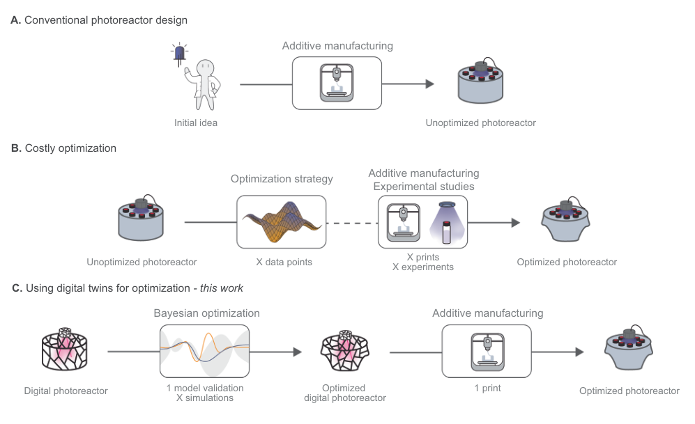
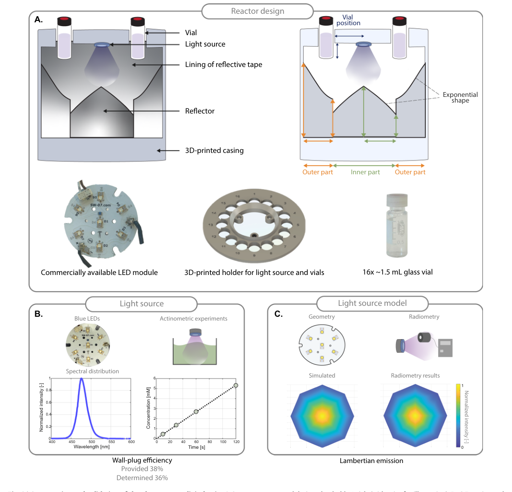
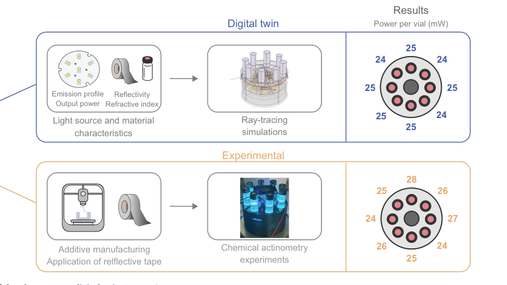
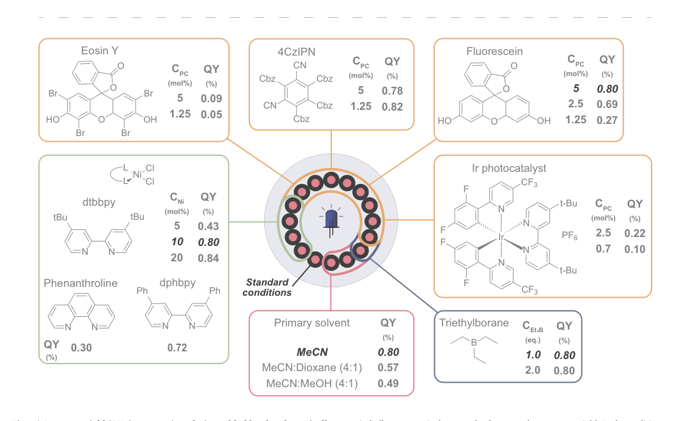

论文资料
Closed-loop photoreactor design enabled by machine learning and digital twins
已取得公开摘要，图文解读尚未完成
已取得公开摘要，图文解读尚未完成。取得完整资料并通过核验后，这个地址会更新为图文解读。
公开摘要
Designing efficient photoreactors remains challenging due to the complex interplay of reflection, scattering, and absorption. Here, we introduce a closed-loop workflow integrating ray-tracing digital twins with multi-objective Bayesian optimization to design photoreactors with high photon capture and uniform irradiation. A digital 3D reactor model is calibrated using measured emission characteristics, reflectivity data, and geometrical properties and validated against potassium ferrioxalate actinometry. The validated model explores reflector shape and vial positioning, identifying geometries that maximize incident photon flux while maintaining homogeneity across 16 vials. Experimental validation using a photocatalytic Suzuki–Miyaura cross-coupling shows that reaction yields track simulated photon flux. The optimized reactor is further applied to quantum-yield screening, enabling mechanistic insights across diverse conditions in a single experiment. This work establishes an experimentally validated virtual co-design framework in which machine learning and digital twins accelerate photoreactor development and support quantitative understanding of photochemical processes.
原图未改动。以下图注来自标注的来源，不据此补写摘要未报告的实验结论。
已取得的论文原图




原文图注与出处
Fig. 2 | Construction and validation of the photoreactor digital twin. A Cross- section of the parametrized reactor design showing the light source, vial positions, 3D-printed casing, reflective lining, and the inner and outer reflector segments defined by exponential curves. The reflector geometry and vial placement are varied during optimization. The design was based on a commercially available light
Schuurmans, Jasper H. A. et al.
原文图页 · CC BY 4.0


